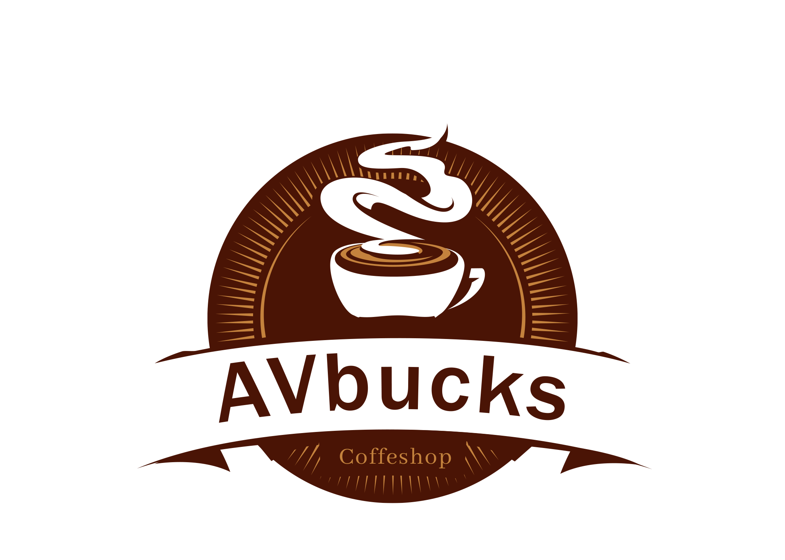

AVbucks originally started in 2017 by Ryan Pitansa, Daniel Agatan, and Clarissa Arifin, with it's first shop located in Jakarta, Indonesia. From this location, AVbucks sold high-quality whole coffee beans, dark-roasted in small batches, the European way.
In 2018, Daniel Agatan, the now celebrated CEO of AVbucks, joined as director of retail operations and marketing. Two years later, Mr. Agatan convinced the founders of Starbucks to test the coffeehouse concepts in their downtown Jakarta store, where the first AVbucks® Caffe Latte was served.
In 2019, Daniel Agatan led a group of investors that purchased AVbucks from its' founders. Since then, AVbucks has become the premier roaster and specialty coffee retailer in Indonesia. Currently, there are 24 stores in 6 cities.
Along with selling high quality coffee beans, AVbucks offers a variety of speciality coffee drinks, teas, hot chocolate, merchandise and a limited menu selection of food items. Their stores offer a clean, relaxing atmosphere with free wifi for customers.